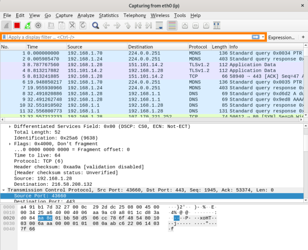

Display Filters
Capture filters are set before starting a packet capture and cannot be modified during the capture.
Display filters on the other hand do not have this limitation and you can change them on the fly
example input commands:| Syntax | alternative Syntax | description |
|---|
| ip.addr == 172.18.5.4 | | All the packets from or to the specified host |
| ip.addr == 192.168.0.0/24 | | Packets from and to the specified network |
| ip.src == 192.168.0.0/24 | | The source IP address must be in the specified network |
| ip.dst == 192.168.0.0/24 | | The destination IP address must be in the specified network |
| http.request.method == GET | | display only http GET request data performed like open a site |
| http.request.method == POST | | display only http POST send data performed like create or update a resource on a server |
| tcp.port==44 | | Packets where the source or destination TCP port is 44 |
| tcp.flags.syn==1 | | capture all the packets with a SYN flag enabled |
| tcp.flags.ack==1 | | capture all the packets with a ACK flag enabled |
| tcp.stream == 0 | tcp.stream eq 0 | follow the first connection initialized with a first handshake (to do that we can also right click on a packet and follow-->... stream; doing that we see in brief only the application layer data) |
| tcp.stream == 1 | tcp.stream eq 1 | follow a different second connection initialized with a second handshake |
| arp | | capture only arp traffic |
| http | | capture only http traffic |
| icmp | | capture only icmp traffic |
| dns | | capture only dns traffic |
| tcp contains "put-a-word-here" | | tcp packets that contain the specified word |
It is possible to combine more filter with:
• and
• or
example: ip.addr==192.168.1.43 and (dns or http)
It is also possible exclude some results with:
• !=
example: ip.addr!=192.168.1.43